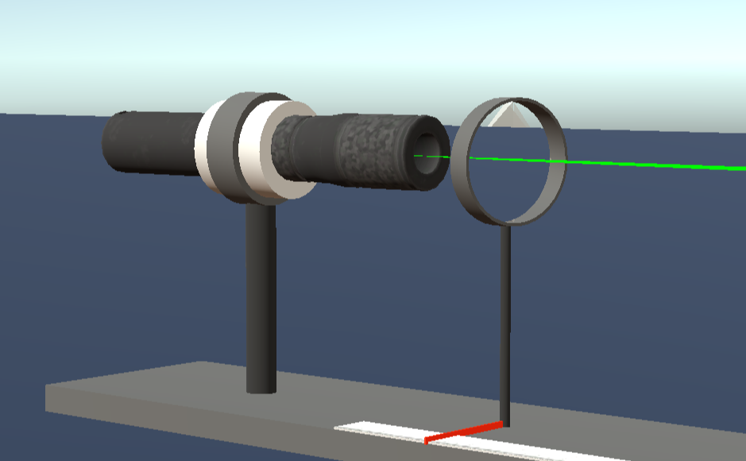
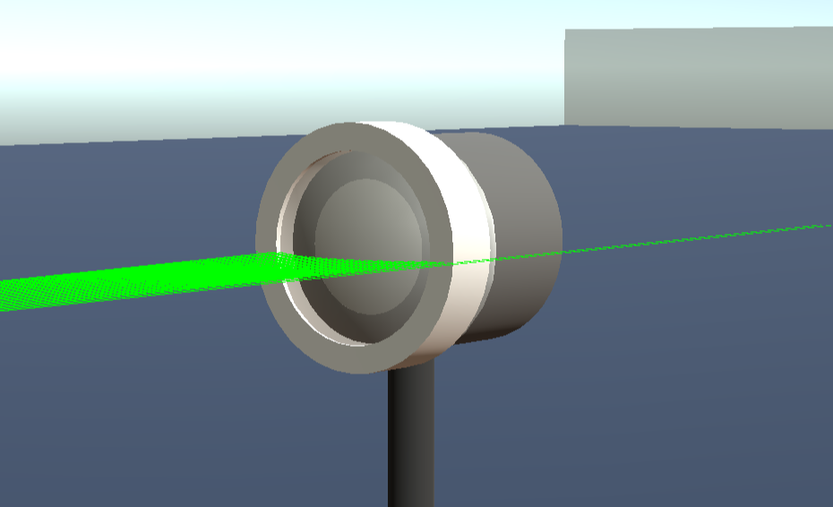
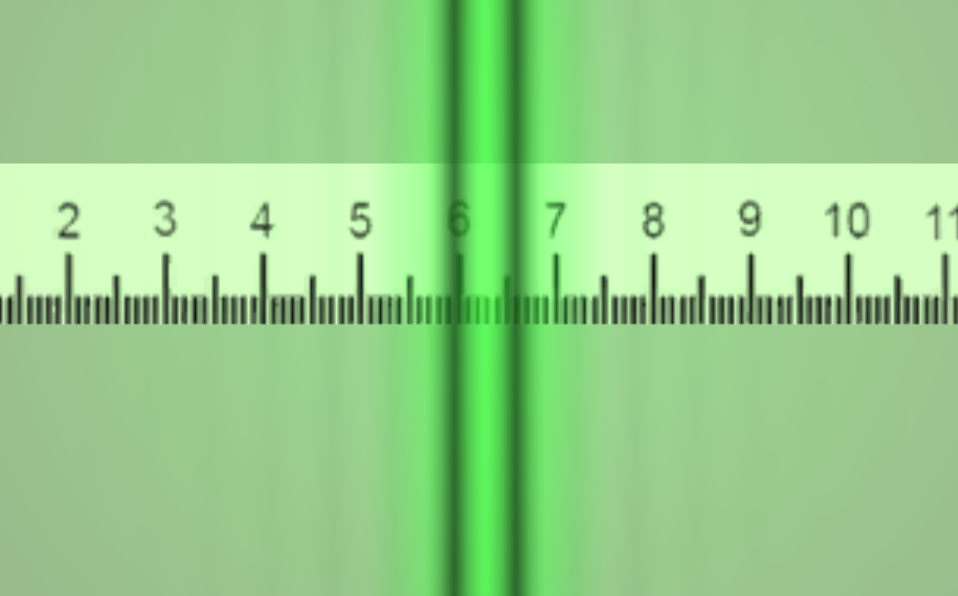

Инструкция по пользованию виртуальной установкой:
- Управление движением:
A - Движение влево
W - Движение вперед
S - Движение назад
D - Движение вправо
- Приближение и отдаление: колёсико мышки
- Движение окуляра: ↑ ↓
- Движение бипризмы: ← →
- Посмотреть в окуляр: E
- Вернуться к бипризме: Q
Источник

Бипризма

Экран

Определение длины световой волны интерференционным
методом при помощи бипризмы Френеля. Бипризма Френеля представляет собой
две призмы с очень малым преломляющим углом, сложенные основаниями. От источника света лучи падают на обе половины
бипризмы, преломляются в ней и за призмой распространяются так, как если бы исходили из двух мнимых источников. За призмой имеется область пространства, в которой световые волны, преломлённые верхней и нижней половинами бипризмы, перекрываются. В этой области пространства сводятся воедино две части каждого цуга волн
от источника, прошедшие разные оптические пути, способные интерферировать. Интерференционная картина, получающаяся при этом, соответствует
интерференции волн, исходящих из двух когерентных источников.